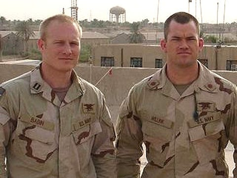

About Jocko
John Gretton "Jocko" Willink (born September 8, 1971) is an American author, podcaster, and retired naval officer who served in the Navy SEALs. His military service included combat actions in the war in Iraq, where he eventually commanded the SEAL Team 3's Task Unit Bruiser that fought in the battle against the Iraqi insurgents in Ramadi, and was honored with the Silver Star and Bronze Star for his service. He achieved the rank of Lieutenant Commander.
Leif Babin (left), platoon commander and Jocko Willink (right), Lieutenant Commander of Seal Team Three in Iraq
Characteristics
He is dedicated towards the philosophy of ownership to excel in leadership
- Leadership
- Character
- Assumes responsibility
Friends
He runs a podcast with Echo Charles, an enthusiast of Brazilian Jiu-Jitsu and brings on former navy seals and other veterans to speak about things such as leadership